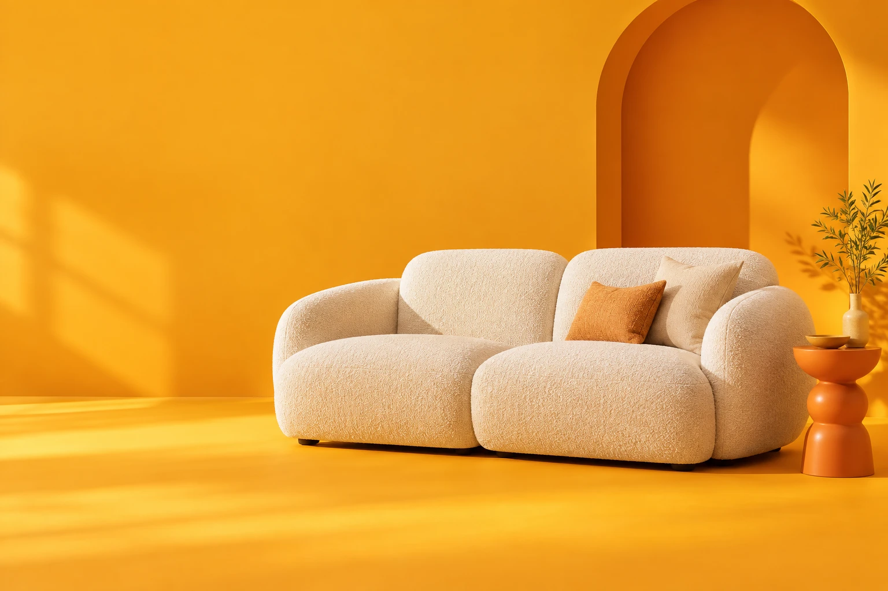
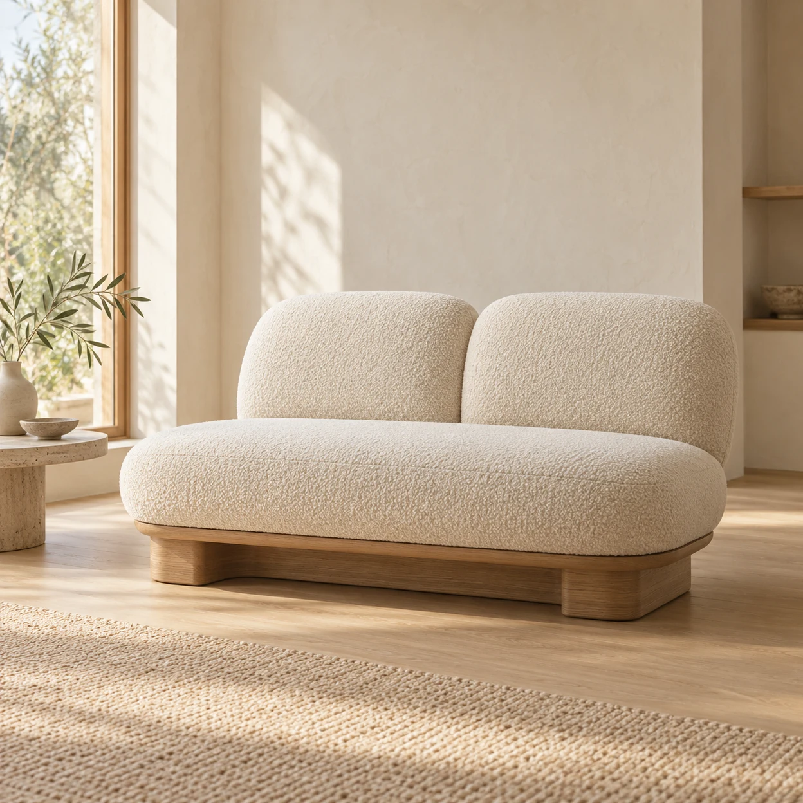
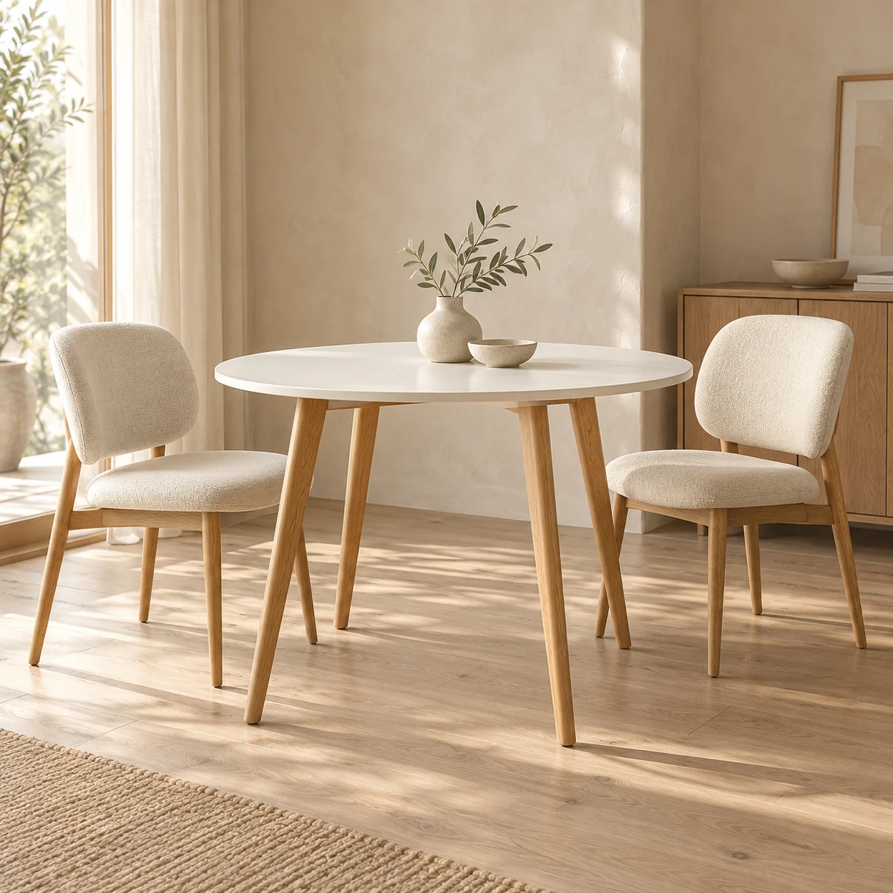
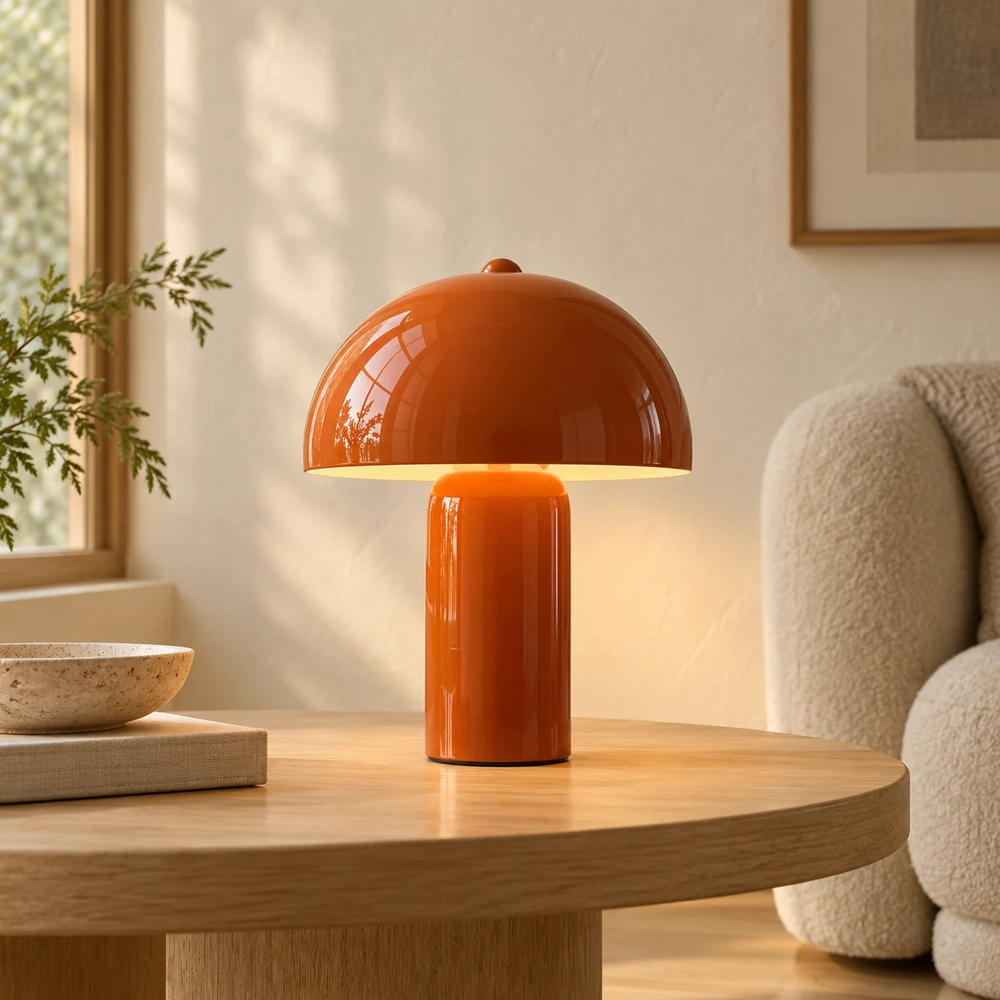
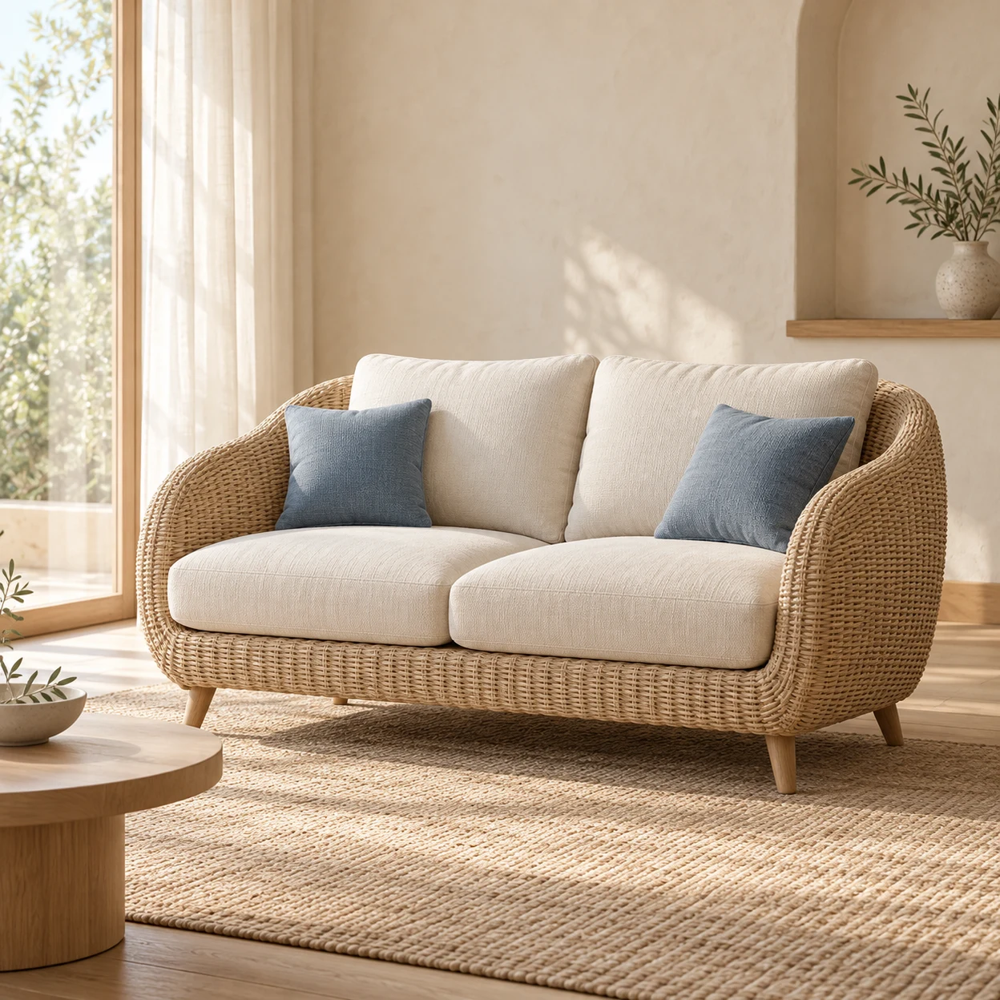
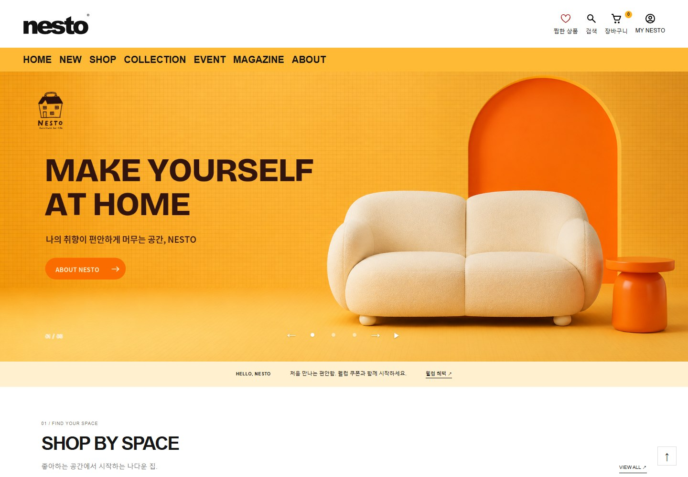
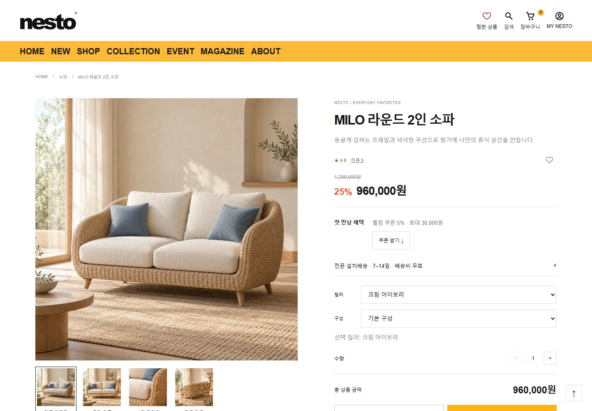
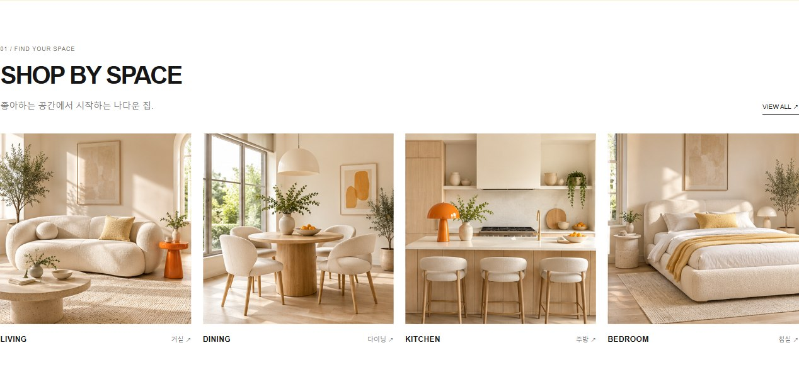

BRAND & DIGITAL EXPERIENCE CASE STUDY / 01
20–30대, 1·2인 가구의 첫 공간을 위해
휴식도,
내 취향대로.
좋아하는 색과 모양으로 시작하는 나의 첫 공간.
취향의 발견이 가구의 선택으로 이어지는 브랜드, NESTO.
- PROJECT
- 가구 · 라이프스타일 브랜드
- ROLE / TYPE
- 브랜딩 · UI/UX · 웹 구현 / 개인

01 / WHO IS NESTO FOR?
첫 공간의 기준은,
나다운 취향.
내 취향은 표현하고 싶지만, 가구를 고르는 기준은 아직 낯선 사람들. NESTO는 첫 집을 꾸미는 20–30대 1·2인 가구의 세 가지 생활 장면에서 출발합니다.
생활 장면을 선택해 제안을 살펴보세요.
가구 하나를 고르는 일에서
내가 살고 싶은 장면을 찾는 일로.
타깃과 생활 장면은 개인 프로젝트의 기획 가설입니다.

01 — MY FIRST NEST작은 공간에, 충분한 나다움.
공간 사진에서 조합을 발견하고, 제품의 치수와 소재로 내 방에 맞는지 확인하도록.

02 — MIX OUR TASTE취향은 달라도, 조합은 새롭게.
테이블과 의자를 함께 보며 서로의 취향을 맞춰봅니다. 공간별 컬렉션에서 우리 집만의 조합을 발견하도록.

03 — A LITTLE CHANGE. A BIG MOOD.좋아하는 색 하나면, 새로운 무드.
오렌지 조명, 둥근 오브제, 눈길 가는 실루엣. 작은 아이템부터 취향을 더하고 어울리는 가구로 탐색을 넓히도록.
02 / FROM NEED TO DESIGN
취향은 선명하게.
선택은 명쾌하게.
설렘만으로 고르기에는 오래 곁에 둘 가구니까.
‘어울릴까, 맞을까, 찾기 쉬울까’라는 질문을 세 가지 화면 설계 기준으로 옮겼습니다.
- 01SPACE FIRST
상품보다 먼저, 공간.
‘무슨 가구를 살까?’가 막막할 때, 거실·다이닝·침실에서 시작합니다. 함께 놓인 모습이 취향의 단서가 됩니다.
공간을 제안하는 방식 - 02FEEL, THEN KNOW
분위기 다음, 선택의 근거.
큰 사진으로 먼저 느끼고, 가격·소재·치수·옵션을 차례로 확인합니다. 감성과 필요한 정보가 함께 있는 쇼핑입니다.
정보를 정리하는 방식
- 03TAP. PICK. SAVE.
모바일에서도, 끊김 없이.
넓은 화면에서는 나란히 비교하고, 모바일에서는 사진 다음에 정보를 읽습니다. 기기에 맞춰 탐색의 흐름을 다듬었습니다.
반응형으로 이어지는 방식
세 가지 기준은 타깃 가설에서 도출한 설계 방향이며, 사용성 개선 효과는 아직 검증하지 않았습니다.
03 / BOLD LOOK. CLEAR RULES.
눈에 띄는 컬러,
이유 있는 디자인.
브랜드를 기억하게 하는 요소와 선택을 돕는 정보.
네 가지 디자인 기준을 실제 화면과 함께 살펴보세요.

COLOR / 기억과 집중
쨍한 오렌지,
또렷한 블랙.
취향을 드러내고 싶은 타깃에게, 첫인상은 선명하게. 오래 읽고 비교할 영역은 차분하게. 색의 역할을 나눠 개성과 가독성을 함께 잡았습니다.
- 01첫인상을 만드는 색면
오렌지 배경과 굵은 블랙 문구로 브랜드의 유쾌한 태도를 먼저 전합니다.
- 02탐색을 위한 밝은 바탕
공간 탐색이 시작되는 곳에서는 색을 덜어, 사진과 제목에 집중하게 합니다.
브랜드는 강하게 기억되고, 상품 정보는 빠르게 읽히는 화면.

TYPE & LAYOUT / 읽는 순서
먼저 끌리고,
바로 비교하도록.
처음 가구를 고를 때 필요한 것은 더 많은 문장보다 읽는 순서입니다. 크기·굵기·간격으로 이름, 가격, 옵션의 우선순위를 나눴습니다.
- 01형태를 읽는 큰 사진
소파의 실루엣과 소재감을 충분히 본 뒤, 오른쪽 정보로 시선을 옮깁니다.
- 02선택을 좁히는 정보
상품명과 가격을 먼저 읽고, 구분선 아래에서 배송과 옵션을 확인합니다.
모든 문장을 읽지 않아도, 필요한 정보부터 찾을 수 있도록.

어울리는 가구로.
공간 카테고리와 연결 상품으로
영감이 탐색으로 이어집니다.
CURATION / 취향을 찾는 단서
가구 하나보다,
함께 놓인 모습을.
첫 집을 꾸미는 사람에게 ‘어떤 가구’보다 ‘어떤 공간’이 더 익숙한 질문이라고 보았습니다. 공간 사진을 탐색의 입구로 삼은 이유입니다.
- 01익숙한 공간 이름
가구 용어 대신 거실·다이닝·주방·침실로 탐색의 출발점을 만듭니다.
- 02공간에서 개별 상품으로
함께 놓인 모습에서 취향을 찾고, 해당 공간의 가구로 탐색을 이어갑니다.
한 제품의 매력을 넘어, 내 공간에 함께 놓을 모습을 상상하기.
공간·상품 이미지는 콘셉트를 표현한 AI 생성 이미지이며, 실제 판매 상품이나 고객 사례가 아닙니다.
이 화면 직접 체험하기RESPONSIVE / 맥락을 유지하는 배치
작게 줄이기보다,
읽기 좋게 다시 놓기.
이동 중에는 휴대폰으로 발견하고, 큰 화면에서는 자세히 비교할 수 있도록. 기기가 바뀌어도 사진을 보고 판단하는 흐름을 이어갑니다.
- 01PC · 나란히 확인
사진과 구매 정보를 좌우에 놓아, 형태와 조건을 오가며 확인합니다.
- 02모바일 · 순서대로 확인
사진 다음에 상품명과 가격을 배치해, 좁은 화면에서도 읽는 순서를 지킵니다.
- PC
- 넓게 비교하는 4열 목록
- TABLET
- 사진 크기를 지키는 3열
- MOBILE
- 2열 목록 · 세로형 상세
화면이 달라져도 상품을 찾고 판단하는 흐름은 익숙하게.
04 / MAKE YOURSELF AT HOME
이제, 나의 공간을
만나볼 시간.
메인에서 공간을 고르고, 목록에서 비교한 뒤 상세로.
직접 눌러보며 디자인이 작동하는 흐름을 확인해 보세요.
‘SHOP BY SPACE’에서 거실을 골라보세요. 마음에 드는 공간이 관련 상품 목록으로 이어집니다.
PC · 공간을 넓게 보고, 상품을 나란히 비교합니다.
화면 안에서 스크롤하며 직접 살펴보세요.
가상 브랜드의 프런트엔드 구현입니다. 찜·장바구니·체험 주문은 현재 브라우저에 저장되며, 실제 결제나 서버 주문은 발생하지 않습니다.
05 / YOUR TASTE, CONNECTED.
나다운 공간으로,
취향을 연결하다.
브랜드부터 탐색의 끝까지.
타깃 가설을 바탕으로 브랜드 컬러와 이미지 기준을 세우고, 메인·목록·상세를 HTML·CSS·JavaScript로 연결했습니다. 공간별 탐색, 필터, 옵션 선택을 반응형 화면에서 경험할 수 있습니다.
분위기에도 정보의 순서가 필요하다.
큰 이미지와 여백은 브랜드를 느끼게 하고, 일관된 상품 정보는 비교를 돕습니다. 두 역할이 섞이지 않도록 화면마다 무엇을 먼저 보여줄지 결정하는 과정이 중요했습니다.
의도가 사용자의 경험이 되는지.
다음 단계에서는 ‘공간에서 원하는 상품 찾기’와 ‘모바일에서 크기·옵션 확인하기’를 사용자 과제로 검증하려 합니다. 탐색 시간이나 구매 전환의 개선은 아직 측정하지 않았습니다.